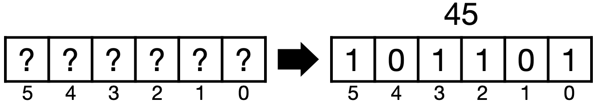
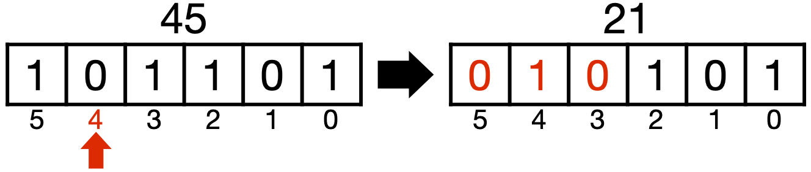
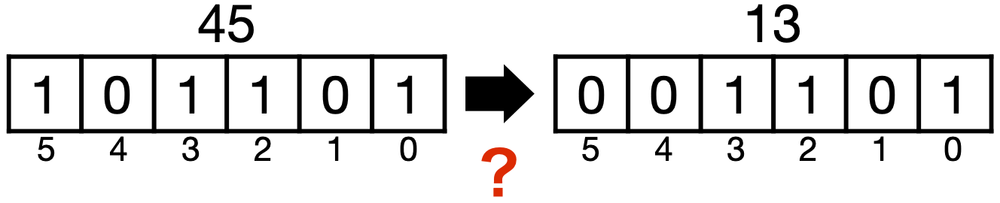

【課題】ビット反転ボードの操作を見つける#
ビット反転ボードという架空のボードとグローバー探索を使って、ある数字を別の数字に変換する問題を考えてみます。
問題設定#
グローバーのアルゴリズムでは、\(N=2^6\)個の要素を持つリスト（\(=[0,1,2,\cdots,63]\)）から45を見つける問題を考えました。ここではこの6量子ビットの探索問題をベースに考えますが、問題は以下のようなものです。
あるボードがあって、そのボードにはビット毎に0か1を書き込むことができます。例えば45であれば、2進数表記\(45=101101\)を6つの枠を持つボードに書き込みます。
{kind=link}
このボードは、ある桁のビットを「押す」と、そのビットと一つ隣のビットが反転するという特徴があります。例えば、45のボードの上から2桁目のビットを「押す」と、\(21=010101\)に変わると言った具合です。
{kind=link}
この課題では、このボードを使ってある数字（例えば45）を別の数字（例えば13）に変換するという問題を考えます。特に、最小の押し下げ回数で目的の数字が得られるにはどのビットを押し下げるのが良いか、そのビット位置を見つける問題です。
{kind=link}
ヒント#
いろんなやり方があると思いますが、例えば３つの量子ビットレジスタ、１つの古典ビットレジスタを持つ回路を考えてみます。
ボード上の数字を記録するレジスタ = board
ボードの「押し下げ」を記録するレジスタ = flip
ボード上の数字が欲しい答えの時に位相が反転するレジスタ = oracle
測定結果を保持する古典レジスタ = result
これらのレジスタを持つ回路を使って、以下のように考えてみてください。
boardレジスタに初期値45をセットする。
6ビットの数字の場合、6量子ビットの「全ての押し下げパターンの重ね合わせ」をflipレジスタに作る。
各ビットの押し下げに対して、boardレジスタのビット反転を行う操作を量子ゲートで実装する。
boardレジスタの数字が欲しい答えの場合に、oracleビットの位相を反転するオラクルを作る。
# Tested with python 3.8.12, qiskit 0.34.2, numpy 1.22.2
from qiskit import QuantumCircuit, ClassicalRegister, QuantumRegister, transpile
from qiskit_aer import AerSimulator
# 6量子ビットの探索問題を考える
n = 6 # 量子ビット数
# グローバー反復を繰り返す回数: pi/4*sqrt(2**6)に近い整数
niter = 6
# レジスタ
board = QuantumRegister(n) # ボードの「数字」を記録するレジスタ
flip = QuantumRegister(n) # ボードの「押し下げ」を記録するレジスタ
oracle = QuantumRegister(1) # ボード上の数字が欲しい答えの時に位相反転するレジスタ
result = ClassicalRegister(n) # 測定結果を保持する古典レジスタ
以下の回路の中身を書いてください。
qc = QuantumCircuit(board, flip, oracle, result)
##################
### EDIT BELOW ###
##################
# qcの回路を書いてください
##################
### ABOVE BELOW ###
##################
コードをシミュレータで実行して、答えを確認する。 Final scoreとして、得られた答え（ビット列）のうち、頻度が高いものから10個を出力しています。
# シミュレータで実行
backend = AerSimulator()
qc_tr = transpile(qc, backend=backend)
job = backend.run(qc_tr, shots=8000)
result = job.result()
count = result.get_counts()
score_sorted = sorted(count.items(), key=lambda x:x[1], reverse=True)
final_score = score_sorted[0:10]
print('Final score:')
print(final_score)
提出するもの
この問題を解く量子回路
45を13に変換するビット押し下げパターンを高確率で見つけていることが分かる結果